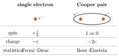
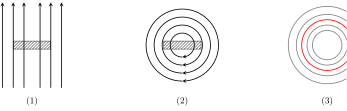
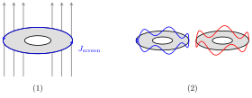

2 Ginzburg–Landau theory and Cooper pairs
Superconductivity is one of the most striking manifestations of quantum mechanics at the macroscopic scale. At its heart lies a simple question: why do electrons, which normally repel each other and obey the Pauli exclusion principle, sometimes bind together and condense into a single coherent quantum state?
This chapter develops the minimal phenomenological framework needed to answer that question for our purposes — the Ginzburg–Landau (GL) description of the superconducting condensate, sharp enough to derive both the supercurrent and the quantisation of magnetic flux through a superconducting ring. The two results we extract here, the gauge-invariant phase \(\varphi = \theta - (q/\hbar)\!\int\! \mathbf A\cdot d\boldsymbol\ell\) and the flux quantum \(\Phi_0 = h/2e\), are the entire vocabulary of the rest of the course: the SQUID of Chapter 2, the Josephson junction of Chapter 4, and the flux-tunable transmon of Chapter 5 are all built from them.
2.1 Macroscopic wavefunction
The microscopic mechanism behind superconductivity, due to Bardeen, Cooper and Schrieffer, can be summarised in two steps:
Pair formation. Electrons near the Fermi surface attract each other through an effective interaction mediated by lattice vibrations. When an electron travels through the lattice it pulls the surrounding positive ions slightly towards it, leaving behind a transient region of excess positive charge density. Because the ions are heavy this distortion persists long enough for a second electron to be attracted to the same region; the two electrons therefore communicate via the exchange of phonons and acquire a weak but finite binding energy \(E_b \sim k_B T_c\).
Bosonic statistics. A single electron is a fermion (spin \(1/2\)) and obeys Pauli exclusion, so electrons fill the Fermi sea one state at a time. A Cooper pair, formed by two electrons with opposite spins \((\uparrow\downarrow)\) and opposite momenta, carries spin \(0\) and is therefore a boson. Bosons do not obey Pauli exclusion: at sufficiently low temperatures they all condense into the same single-particle state.

Because the pair binding energy is of order \(k_B T_c\), the temperature plays the role of a thermal switch:
- for \(T > T_c\) the thermal bath breaks pairs as fast as they form: the material is a normal metal;
- for \(T < T_c\) pairs survive and condense — the superconducting state.
Below \(T_c\) a macroscopic fraction of the Cooper pairs collapses into the same single-particle state and the entire condensate is described by one complex field, the macroscopic wavefunction \[ \Psi(\mathbf r,t) = \sqrt{\rho(\mathbf r,t)}\,e^{i\theta(\mathbf r,t)} , \] in which \(\rho(\mathbf r,t) = |\Psi|^2\) is now a particle density (Cooper pairs per unit volume, often denoted \(n_s\)) and \(\theta(\mathbf r,t)\) is a globally coherent phase. The fact that \(\Psi\) exists as a smooth function on the laboratory scale — not just as a single-particle probability amplitude — is what makes superconductivity macroscopically quantum.
The macroscopic (order-parameter) wavefunction of a superconductor is the complex field \[ \Psi(\mathbf r,t) = \sqrt{\rho(\mathbf r,t)}\,e^{i\theta(\mathbf r,t)} , \qquad \rho = |\Psi|^2 = n_s , \] with \(\rho(\mathbf r,t)\) the local density of Cooper pairs and \(\theta(\mathbf r,t)\) a single coherent phase common to the entire condensate.
The Cooper-pair condensate is the macroscopic occupation of a single bosonic mode by pairs of electrons of opposite spin and momentum, bound by a phonon-mediated attraction with binding energy \(E_b \sim k_B T_c\). Each pair carries charge \(q = 2e\) and mass \(m = 2m_e\); below \(T_c\) the condensate is described by the single wavefunction \(\Psi(\mathbf r,t)\).
Remark. \(\Psi\) is not a one-particle Schrödinger wavefunction in disguise. It is best read as the expectation value of the pair-creation field of BCS theory; for our purposes the GL viewpoint suffices, in which \(\Psi\) is taken as the fundamental degree of freedom and microscopic justification is deferred to Tinkham (Ch. 1–3).
The remainder of this chapter develops the dynamics of this single complex field \(\Psi\) in the presence of an electromagnetic field.
2.2 Hamiltonian with EM field
We posit that \(\Psi\) obeys a Schrödinger-like equation for a charged particle of charge \(q\) and mass \(m\) coupled to an electromagnetic field \((\mathbf A,\phi)\). The Hamiltonian is the standard one-particle Hamiltonian with minimal coupling: \[ \hat H = \frac{1}{2m}\left(\frac{\hbar}{i}\boldsymbol\nabla - q\mathbf A(\mathbf r,t)\right)^{\!2} + q\phi(\mathbf r,t) . \tag{2.1}\]
The construction:
Kinetic term. Minimal coupling promotes the canonical momentum \(\mathbf p\) to the kinetic (mechanical) momentum \(\boldsymbol\pi = \mathbf p - q\mathbf A\). As a differential operator this is \[ \hat{\boldsymbol\pi} = \frac{\hbar}{i}\boldsymbol\nabla - q\mathbf A . \] The square \(\hat{\boldsymbol\pi}^2/(2m)\) generalises \(\hat{\mathbf p}^2/(2m)\) to a charged particle in a magnetic field \(\mathbf B = \boldsymbol\nabla\times\mathbf A\).
Scalar potential. \(q\phi\) is the electrostatic potential energy and enters undisturbed.
Conventions. For Cooper pairs the charge is \(q = 2e\) and the mass \(m = 2m_e\); we keep \(q\) and \(m\) generic so that the formalism is directly recyclable later (e.g. for single-electron tunnelling, Ch. 4).
Phenomenological status. Genuine Ginzburg–Landau theory adds a non-linear self-interaction term \(\alpha|\Psi|^2 + \tfrac{1}{2}\beta|\Psi|^4\) that fixes the equilibrium density \(\rho\) and gives the coherence length and the penetration depth. For everything we do in this course only \(\rho\) matters, and the non-linear corrections can be ignored — the linear Schrödinger-like form (Equation eq-H) is enough.
Remark. The magnetic field does no work on a charged particle, but curves its trajectory. This is reflected in the fact that \(\mathbf A\) modifies the momentum but not the energy directly: in (Equation eq-H) \(\mathbf A\) appears only inside the kinetic operator \(\hat{\boldsymbol\pi}\), never inside \(q\phi\).
2.3 Continuity equation
We now show that the density \(\rho = |\Psi|^2\) obeys a local conservation law. Classically, for a charge density \(\rho\) moving with velocity \(\mathbf v\) and current density \(\mathbf J = \rho\mathbf v\), \[ \frac{\partial\rho}{\partial t} + \boldsymbol\nabla\cdot\mathbf J = 0 , \qquad \frac{d}{dt}\!\int_V \rho\,dV = -\oint_{\partial V}\mathbf J\cdot d\mathbf S . \] The intuitive content: what flows out through the surface must decrease inside. We want the analogue for the Cooper-pair condensate; once we have it, the supercurrent \(\mathbf J\) and its closed-loop integrals will give us flux quantisation.
The macroscopic wavefunction \(\Psi\) obeying (Equation eq-H) satisfies \[ \frac{\partial\rho}{\partial t} + \boldsymbol\nabla\cdot\mathbf J = 0 , \qquad \mathbf J = \frac{\hbar}{2mi}\bigl(\Psi^{*}\boldsymbol\nabla\Psi - \Psi\boldsymbol\nabla\Psi^{*}\bigr) - \frac{q}{m}\mathbf A\,\rho . \tag{2.2}\]
Derivation. Differentiate \(\rho = \Psi^{*}\Psi\) in time and use the Schrödinger equation \(i\hbar\,\partial_t\Psi = \hat H\Psi\): \[ i\hbar\,\partial_t(\Psi^{*}\Psi) = \Psi^{*}\hat H\Psi - \Psi\,\hat H\Psi^{*} . \]
Scalar potential cancels. The \(q\phi\) piece of \(\hat H\) is just multiplication by a real number, hence symmetric under \(\Psi\leftrightarrow\Psi^{*}\): \[ \Psi^{*}(q\phi\,\Psi) - \Psi\,(q\phi\,\Psi^{*}) = q\phi|\Psi|^2 - q\phi|\Psi|^2 = 0 . \]
Pure-kinetic term. Drop \(\mathbf A\) for a moment and treat the bare Laplacian piece \(-\hbar^2\nabla^2/(2m)\). Using the identity \[ \Psi\nabla^2\Psi^{*} - \Psi^{*}\nabla^2\Psi = \boldsymbol\nabla\cdot\bigl(\Psi\boldsymbol\nabla\Psi^{*} - \Psi^{*}\boldsymbol\nabla\Psi\bigr), \] we obtain \[ i\hbar\,\partial_t(\Psi^{*}\Psi) = \frac{\hbar^2}{2m}\,\boldsymbol\nabla\cdot\bigl(\Psi\boldsymbol\nabla\Psi^{*} - \Psi^{*}\boldsymbol\nabla\Psi\bigr). \] Dividing by \(i\hbar\): \[ \frac{\partial\rho}{\partial t} = -\,\boldsymbol\nabla\cdot\underbrace{\frac{\hbar}{2mi}\bigl(\Psi^{*}\boldsymbol\nabla\Psi - \Psi\boldsymbol\nabla\Psi^{*}\bigr)}_{=:\,\mathbf J_{0}} . \] This is the familiar probability current of single-particle quantum mechanics.
Restoring \(\mathbf A\). With minimal coupling, \(\boldsymbol\nabla\to\boldsymbol\nabla - (iq/\hbar)\mathbf A\) inside \(\mathbf J_0\). Expanding to first order in \(\mathbf A\) produces the extra diamagnetic term \[ \mathbf J = \mathbf J_{0} - \frac{q}{m}\mathbf A\,\rho , \] which is responsible for the Meissner–Ochsenfeld expulsion of magnetic flux from the bulk. This completes the proof.
2.4 Current density equation
It is convenient to repackage (Equation eq-J) using the kinetic-momentum operator \(\hat{\boldsymbol\pi} = (\hbar/i)\boldsymbol\nabla - q\mathbf A\) introduced in §1.2: \[ \mathbf J = \frac{1}{2m}\!\left[\Psi^{*}\!\left(\frac{\hbar}{i}\boldsymbol\nabla - q\mathbf A\right)\!\Psi + \Psi\!\left(-\frac{\hbar}{i}\boldsymbol\nabla - q\mathbf A\right)\!\Psi^{*}\right] . \tag{2.3}\]
The two terms are complex conjugates of each other, so \(\mathbf J\) is real; the symmetrised combination is exactly the matrix element \(\langle\Psi|\hat{\boldsymbol\pi}|\Psi\rangle/m\) in disguise. The form (Equation eq-Jpi) makes the gauge structure transparent: \(\mathbf J\) depends on \(\Psi\) only through the kinetic (gauge-invariant) momentum, not through the canonical one.
Equation (Equation eq-Jpi) is what you should remember: it is the same expression you would obtain for the expectation value \(\rho\,\langle\mathbf v\rangle\) of a one-particle velocity operator, with \(\hat{\mathbf v} = \hat{\boldsymbol\pi}/m\).
2.5 Explicit form of the current and condensate velocity
We now use the polar decomposition \(\Psi = \sqrt{\rho}\,e^{i\theta}\) to extract the physics from (Equation eq-Jpi).
Step 1 — gradient. Direct differentiation gives \[ \boldsymbol\nabla\Psi = \left(\frac{\boldsymbol\nabla\rho}{2\sqrt{\rho}} + i\sqrt{\rho}\,\boldsymbol\nabla\theta\right)e^{i\theta} . \] Its complex conjugate is \[ \boldsymbol\nabla\Psi^{*} = \left(\frac{\boldsymbol\nabla\rho}{2\sqrt{\rho}} - i\sqrt{\rho}\,\boldsymbol\nabla\theta\right)e^{-i\theta} . \]
Step 2 — substitute into the probability part \(\mathbf J_0\): \[ \Psi^{*}\boldsymbol\nabla\Psi - \Psi\boldsymbol\nabla\Psi^{*} = \sqrt{\rho}\,e^{-i\theta}\!\left(\tfrac{\boldsymbol\nabla\rho}{2\sqrt{\rho}} + i\sqrt{\rho}\,\boldsymbol\nabla\theta\right)\!e^{i\theta} - \text{c.c.} = 2i\rho\,\boldsymbol\nabla\theta . \] The \(\boldsymbol\nabla\rho\) terms have opposite imaginary signs and cancel; only the phase gradient survives. Therefore \[ \mathbf J_0 = \frac{\hbar}{2mi}\,(2i\rho\,\boldsymbol\nabla\theta) = \frac{\hbar}{m}\,\rho\,\boldsymbol\nabla\theta . \]
Step 3 — restore \(\mathbf A\). Adding the diamagnetic piece from (Equation eq-J), \[ \boxed{\;\mathbf J = \frac{\hbar}{m}\!\left[\boldsymbol\nabla\theta - \frac{q}{\hbar}\mathbf A\right]\rho = \rho\,\mathbf v_s\;} . \tag{2.4}\]
The bracket is the gauge-invariant phase gradient: under a gauge transformation \(\mathbf A\to\mathbf A + \boldsymbol\nabla\chi\), \(\theta\to\theta + (q/\hbar)\chi\), the combination \(\boldsymbol\nabla\theta - (q/\hbar)\mathbf A\) is unchanged, just as \(\mathbf J\) must be a physical observable.
The gauge-invariant phase gradient of the superconducting condensate is \[ \boldsymbol\nabla\varphi \;\equiv\; \boldsymbol\nabla\theta - \frac{q}{\hbar}\mathbf A , \] and the condensate (superfluid) velocity is \[ \mathbf v_s \;:=\; \frac{\hbar}{m}\!\left[\boldsymbol\nabla\theta - \frac{q}{\hbar}\mathbf A\right] = \frac{\hbar}{m}\,\boldsymbol\nabla\varphi , \] so that the supercurrent reads \(\mathbf J = \rho\,\mathbf v_s\), mirroring the classical relation current = density \(\times\) velocity.
Remark (Physical meaning). Equation (Equation eq-Jvs) shows that the supercurrent is driven by two contributions:
- the phase gradient \(\boldsymbol\nabla\theta\) — a purely quantum-mechanical, coherence-driven term;
- the vector potential \(\mathbf A\) — the electromagnetic field.
These are the mathematical seeds of two iconic phenomena:
- Meissner–Ochsenfeld effect — in a bulk superconductor the response of \(\mathbf J\) to \(\mathbf A\) screens external magnetic field from the interior over a length set by the London penetration depth;
- Josephson effect — a current driven solely by a phase difference \(\delta\) across an insulating barrier (Ch. 4).
The same gauge-invariant phase \(\varphi\) that appears here will reappear in Ch. 4 as the dynamical variable of a Josephson junction.
2.6 Magnetic flux quantisation
The Meissner–Ochsenfeld effect expels \(\mathbf B\) from the bulk of a type-I superconductor. An interesting situation arises when the superconductor is not simply connected: take a ring, immerse it in a magnetic field while still in the normal state \((T>T_c)\), cool it below \(T_c\) to expel the field from the metal, and finally switch the external field off. The flux trapped through the hole cannot leak out — it is threading a region that the condensate does not cover.

Both London and BCS predict that the trapped flux cannot take arbitrary values: it is quantised in integer multiples of an elementary flux quantum \(\Phi_0\).
The superconducting flux quantum is \[ \Phi_0 \;:=\; \frac{h}{2e} \;\approx\; 2.07\times 10^{-15}\,\text{Wb} , \] the factor \(2e\) in the denominator reflecting the pair charge of the condensate. Magnetic flux trapped through a hole in a bulk superconductor is restricted to \(\Phi = n\Phi_0\), \(n\in\mathbb Z\).
Let \(\Gamma\) be a closed contour lying entirely inside the bulk of a superconducting ring, encircling the hole. The magnetic flux \(\Phi\) threading \(\Gamma\) is quantised: \[ \Phi = n\,\Phi_0 ,\qquad \Phi_0 = \frac{h}{2e},\qquad n\in\mathbb Z . \]
Proof. Deep inside the bulk, far from the surface, the supercurrent vanishes by the Meissner effect: \(\mathbf J = 0\). Equation (Equation eq-Jvs) then forces the bracket to vanish identically, \[ \boldsymbol\nabla\theta = \frac{q}{\hbar}\mathbf A . \tag{2.5}\] Physically: deep inside the superconductor the gradient of the macroscopic phase is entirely fixed by the vector potential. Integrate (Equation eq-phaseA) along the closed contour \(\Gamma\) shown in panel (3) of the figure: \[ \oint_\Gamma \boldsymbol\nabla\theta\cdot d\boldsymbol\ell = \frac{q}{\hbar}\oint_\Gamma \mathbf A\cdot d\boldsymbol\ell . \tag{2.6}\]
Right-hand side — Stokes. Any surface \(S\) bounded by \(\Gamma\) satisfies \[ \oint_\Gamma \mathbf A\cdot d\boldsymbol\ell = \int_S (\boldsymbol\nabla\times\mathbf A)\cdot d\mathbf S = \int_S \mathbf B\cdot d\mathbf S = \Phi , \] so the right-hand side of (Equation eq-loop) is \(q\Phi/\hbar\).
Left-hand side — single-valuedness. For a smooth scalar field \(\theta\) the line integral of its gradient between two points is the difference of values, \(\int_1^2 \boldsymbol\nabla\theta\cdot d\boldsymbol\ell = \theta_2 - \theta_1\). For a closed contour the endpoints coincide, so naively the integral would vanish. However, \(\theta\) is the phase of \(\Psi\) and only \(e^{i\theta}\) has physical meaning: \(\theta\) is allowed to wind by any integer multiple of \(2\pi\) around \(\Gamma\) provided the wavefunction \(\Psi = \sqrt{\rho}\,e^{i\theta}\) remains single-valued. Hence \[ \oint_\Gamma \boldsymbol\nabla\theta\cdot d\boldsymbol\ell = 2\pi n,\qquad n\in\mathbb Z . \tag{2.7}\]

Combining. Equating the two sides of (Equation eq-loop) using Stokes and (Equation eq-winding), \[ 2\pi n = \frac{q\Phi}{\hbar} \;\Longrightarrow\; \Phi = n\,\frac{2\pi\hbar}{q} = n\,\frac{h}{q} . \] For Cooper pairs the charge is \(q = 2e\), giving \[ \Phi = n\,\frac{h}{2e} = n\,\Phi_0 . \qquad\blacksquare \]
A typical superconducting loop in a transmon device encloses an area \(A \sim (10\ \mu\text{m})^2 = 10^{-10}\ \text{m}^2\). A single flux quantum \(\Phi_0 \approx 2\times 10^{-15}\ \text{Wb}\) then corresponds to a field \(B = \Phi_0/A \approx 20\ \mu\text{T}\) — roughly half the Earth’s field. This is why frequency-tunable transmons demand magnetic shielding far below ambient: a swing of a few microtesla already moves the qubit through an entire flux period.
Remark (The number \(n\) is set when the sample cools). The integer \(n\) is fixed when the sample crosses \(T_c\) and the condensate first sets up its phase; once trapped, it can only change by a discrete jump (a fluxoid enters or leaves through the surface). This is what makes the trapped flux a robust, digitally-valued quantity — and ultimately what makes the SQUID of the next chapter so sensitive.
2.7 Bridge to Chapter 2
The two takeaways of this chapter — the gauge-invariant phase \(\varphi = \theta - (q/\hbar)\!\int\!\mathbf A\cdot d\boldsymbol\ell\) and the flux quantum \(\Phi_0 = h/2e\) — are the entire technology we need to build the first practical device of the course. In Chapter 2 we will cut a superconducting loop with two weak links (Josephson junctions): the gauge-invariant phase will no longer be free to wind smoothly, but will accumulate independently along the two branches, and the resulting interference will produce a critical current modulated by the external flux \(\Phi_{\text{ext}}\) with period \(\Phi_0\). That device — the DC SQUID — is at once the most sensitive magnetometer ever built and the standard tuning knob of a frequency-tunable superconducting qubit.
2.8 Sources
- Lecturer’s notes, Introduction to Quantum Hardware (C. Braggio, Padova 2026), §1 (Ginzburg–Landau theory basics & Cooper pairs).
- Tinkham, M. Introduction to Superconductivity, 2nd ed., Dover (2004), Ch. 1 (overview) and §4.1–4.2 (Ginzburg–Landau theory, flux quantisation).
- Vool, U. & Devoret, M. Introduction to quantum electromagnetic circuits, Int. J. Circ. Theor. Appl. 45, 897 (2017), §2 (superconductivity and the role of the macroscopic phase).